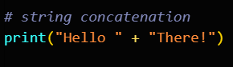
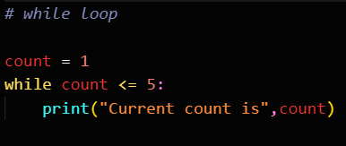

In this section, we will compare Python and Java from the more
technical aspects, which are syntax, readability, performance, and
ecosystem and libraries as well as each language's use cases.
Aspect 4: Syntax and Readability
This segment is pretty straightforward--- we will compare Python
and Java's syntax and readability. For this part, there is no
clear winner, since it is subjective. Although Python's syntax
is easier to understand and read, we cannot really rank them
since again, it is a matter of preference.
Comparing Python and Java's Syntax
Aspect
Python
Java
Method of Defining Code Blocks
Indentation
Curly braces { }
Has semicolons?
No
Yes
Typing discipline
Dynamically-typed (types are not explicitly declared)
Statically-typed (types are explicitly declared during
initialisation)
Boilerplate
Less amount of boilerplate
Has lots of boilerplate
Declaring Variables
name = "Kay"
String name = "Kay";
String concatenation

For loop
While loop

If statement
Function declaration
From the table above, we can deduce that Python's syntax is
clean, clear and concise. Python's syntax emphasizes
readability, and reduces cost of program maintenance. Due to
this, Python is a popular choice for beginners that are just
starting out learning to code.
Java on the other hand, has a more verbose syntax, with
semicolons, curly braces, and explicit type declarations.
Although some people find its strict syntax helpful for catching
errors early on, others consider it less readable. Java's syntax
can be very intimidating for beginners because of its verbosity.
Aspect 5: Performance
Aesthetics are important, but so is performance, even moreso.
Who's better at performance, will it Python or Java?
Python will have to take a backseat this time, as Java has the
upper hand when it comes to performance.
But why is that? Let's see.
Python is an interpreted language, meaning that the
Python Interpreter reads and executes a Python file line by line
during runtime. This introduces overhead and thus slows down the
execution speed.
Other than that, Python has limited support for multithreading,
due to the
Global Interpreter Lock (GIL). In Python, only one thread can execute a process at any given
time.
As a result, while Python is a good choice for most
applications, it is not optimal for high-performance computing
and real-time systems.
Java on the other hand, is
first compiled by the Java compiler into bytecode, and
then the bytecode is executed by the Java Virtual Machine (JVM).
The compilation process allows Java to optimize code beforehand
which leads to quicker execution. Also, as discussed in the
introduction to Java section, the JVM uses the
JIT compilation
technique to speed up the execution process.
Mechanism of the JIT compiler in Java (src: Edureka)
Java has robust support for multithreading, and thus making Java
more efficient for CPU-bound tasks, unlike Python.
Aspect 6: Ecosystem and Libraries
Both of these languages have a rich ecosystem and have an
abundance of libraries and frameworks that are free to use, so
it's fair to say they are equals in this segment.
Python has loads of libraries and frameworks that are tailored
towards many different kinds of applications. This makes Python
really suitable for building many apps.
Python Libraries and Frameworks
Field
Libraries and Frameworks
Web development
Django, Flask
Data science and machine learning
Pandas, numPy, TensorFlow, PyTorch
Graphical User Interface (GUI) development
Tkinter, PyQt
Game development
Pygame
App development
Kivy
Automation
Ansible
Cybersecurity
Scapy
Java is no slouch either! It's got lots of libraries and
frameworks too!
Libraries and Frameworks in Java
Field
Libraries and Frameworks
Web development
Spring, Grails, Hibernate
Data science
Deeplearning4j, Apache Spark
Graphical User Interface (GUI) development
JavaFX
Game development
LibGDX, jMonkeyEngine
App development
Android Standard Library, Android Support Library
Automation
JUnit, Selenium
Cybersecurity
BouncyCastle
Aspect 7: Use Cases
As a continuation from the last segment, we will discuss the use
cases of each language in more detail.
We don't really have a "winner" for this segment, since we are
just comparing the differences between where Python and Java are
most used.
As seen above, although Python can technically be used in loads of
apps, it truly shines in the fields of machine learning and web
development.
For example, TensorFlow is really popular frameworks for training
deep learning models and neural networks. Hence why companies such
as
Coca-Cola,
X
(formerly known as Twitter), and
Spotify
use it.
Thanks to the frameworks Django and Flask, Python is a top choice
for back-end web development.
Java's performance and reliability makes it a very popular for
enterprise systems, Android apps and server-side apps.